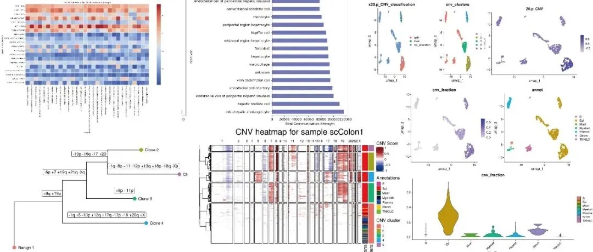
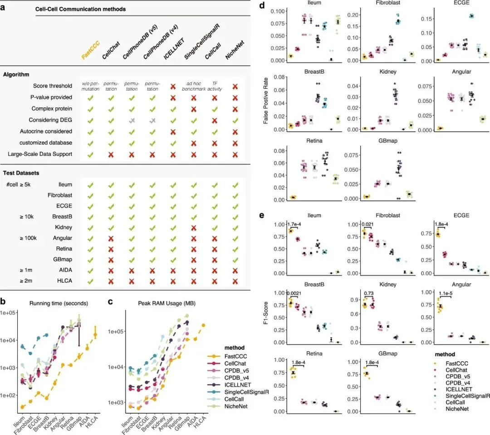
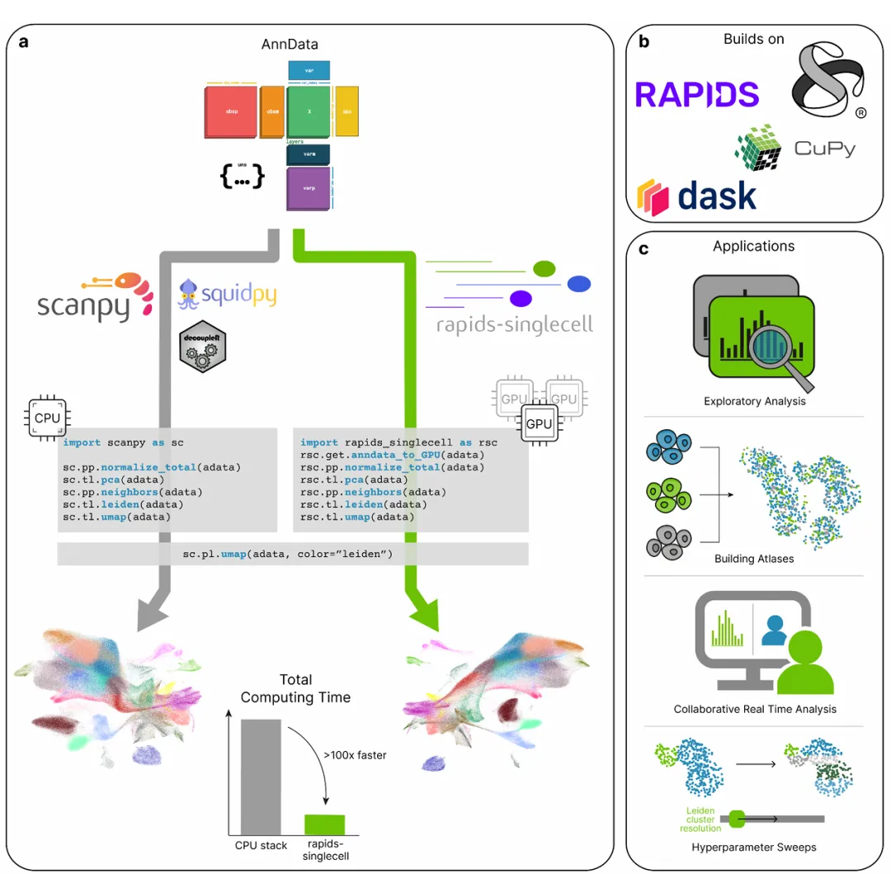
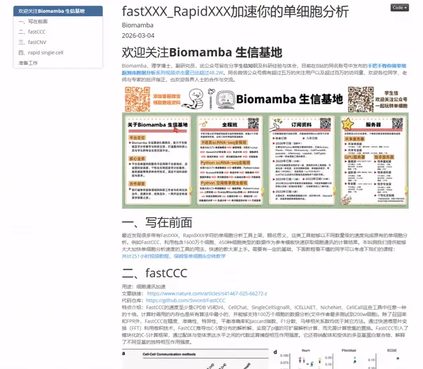
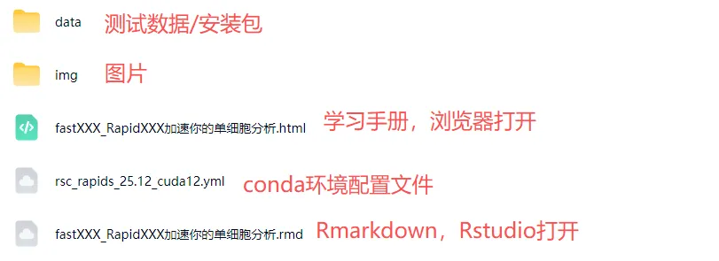

fastXXX、rapidXXX系列加速你的单细胞数据分析
原文：https://mp.weixin.qq.com/s?__biz=MzAwMzIzOTk5OQ==&mid=2247538079&idx=2&sn=9ecd53f31d266d0d3db9db396f8275e2&chksm=9b3c2ccfac4ba5d9fbb82a568a35b2728da5d4cde10ddaa6570f54574c29078421aeb5fb630b#rd 合集：单细胞教程全收录

写在前面


最近发现很多带有FastXXX、RapidXXX字符的单细胞分析工具上架，顾名思义，这类工具能够以不同数量级的速度完成原有的单细胞分析。例如FastCCC，利用包含1600万个细胞、450种细胞类型的数据作为参考模板快速获取细胞通讯的计算结果。
在本次学习手册，我们也整理了多款可显著提升分析效率的工具，包括：fastCCC（细胞通讯分析加速）、fastCNV（拷贝数变异推断加速）、rapid single-cell（GPU加速单细胞流程计算）
欢迎大家在评论区留言补充更多高效工具。
学习手册部分图片集锦：

优惠订阅资料或参与课程请联系客服微信[Biomamba_zhushou] 更多生信教程可见：为什么我们敢开放终身订阅-Biomamba
更多生信教程可见：为什么我们敢开放终身订阅-Biomamba
三款高效加速工具介绍
1. fastCCC
用途：细胞通讯加速
文章链接： https://www.nature.com/articles/s41467-025-66272-z
代码仓库：https://github.com/Svvord/FastCCC
特点介绍：FastCCC的速度至少是CPDB V5和V4、CellChat、SingleCellSignalR、ICELLNET、NicheNet、CellCall这些工具中任意一种的十倍。计算时调用的内存也是所有算法中最小的，并能够支持100万个细胞的数据分析(文中作者最多测试到200w细胞)。除了召回率和FPR外，FastCCC在精度、准确性、特异性、平衡准确率和Jaccard指数、F1分数、马修相关系数均优于其它方法。通过快速傅里叶变换（FFT）利用卷积技术，FastCCC推导出C-S零分布的解析解，实现了p值的可扩展解析计算，而无需计算密集的置换。FastCCC引入了模块化的C-S计算框架，通过配体与受体表达水平之间的代数运算捕捉相互作用强度。它还容纳配体和受体的多亚基蛋白复合物，解释了不同亚基的独特相互作用强度。

2. fastCNV
用途：拷贝数变异推断加速
文章链接：https://www.biorxiv.org/content/10.1101/2025.10.22.683855v1.full.pdf
代码仓库：https://github.com/must-bioinfo/fastCNV/
特点介绍：基于R语言的fastCNV能够加速空间转录组学、scRNA-seq数据预测拷贝数变异（CNVs），有助于区分恶性细胞与非恶性细胞，并对肿瘤细胞的克隆结构进行表征。fastCNV在样本之间汇集二倍体参考序列，并在每个样本内将读数较少的相似斑点或细胞合并为元斑点或细胞。它会自动构建克隆性树，并且比其他方法运行速度快数倍，同时占用内存更少。通过Seurat数据的输入，fastCNV能够直接返回每个细胞是上皮、肿瘤、还是其它细胞的注释。为了评估fastCNV的准确性，作者使用了117 个同时拥有scRNA-seq和WES数据的癌症细胞系进行测试。fastCNV所识别的CNV与从WES数据计算出的CNV高度相关（中位相关性超过 0.75）。fastCNV首次实现了对Visium HD空间转录组学技术所得CNV的分析。FastCNV相较于现有的R方法在速度、内存使用、灵敏度和准确性等方面具有显著优势。
3. rapid single-cell
用途：GPU加速单细胞流程计算
文章链接：https://arxiv.org/pdf/2603.02402
代码仓库：https://rapids-singlecell.readthedocs.io/en/latest/tutorials.html
特点介绍：这是由scverse(就是那个开发了scanpy、anndata、squidpy这些神包组织)开发的工具，通过CuPy内核处理SciPy数据，可以借助NVIDIA-GPU(NVIDIA的官网也可以看到这个项目:https://github.com/NVIDIA-AI-Blueprints/single-cell-analysis-blueprint)加速数百倍的提升单细胞数据计算过程，可以无缝接入scanpy分析anndata数据。值得一提的是，通过RAPIDS内存管理系统，可以在GPU显存不足时把数据暂存到内存当中，并且在GPU充足时支持跨GPU的分布式计算，这意味着rapid single-cell支持数百万单细胞数据的计算(试试上作者测试了100million的数据分析，也只需200min)。在预处理、标准化、高变基因计算、降维(PCA、UMAP、t-SNE)、临近图谱构建、leiden分群等操作时可以提升约120倍计算速度。rapid single-cell准还能支持空间自相关指标、通路及转录因子活性推断、批次矫正、干扰距离计算等操作。只要细胞数超过5w，rapid single-cell准能大大的提升你的计算效率。

以上是三款工具的基本信息，具体实操见我们手册~，领取资料联系客服[Biomamba_zhushou]:
所见即所得
以html格式提供学习手册，可在浏览器中打开并翻阅学习：

学习手册目录：
零、欢迎关注
一、写在前面
二、fastCCC
2.1 安装
2.2 测试数据
2.3 主函数演示
2.4 输出文件
2.5 结果可视化
三、fastCNV
3.1 安装
3.2 测试数据
3.3 运行主函数
3.3.1 单个样本
3.3.2 多个样本运行
3.4 CNV频率
3.5 CNV分群
3.6 进化树
四、rapid single-cell
4.1 安装
4.2 rapid single-cell流程
准备工作
文末下载链接中包含以下内容：

测试文件，总大小9.30GB

往期推送

Biomamba 生信基地现已开放终身订阅，现已包含几十篇订阅资料，未来37年持续更新：为什么我们敢开放终身订阅
2025年我们零差评完成订阅任务（2026订阅须知），2026已更新订阅内容：
风靡一时的scTenifoldKnk单细胞虚拟基因敲除,准不准?
scRNA拟时序分析三大Python包： palantir、PAGA、RNAvelocity
正刊都在用的AI驱动蛋白质从头设计流程：RFdiffusion+ProteinMPNN+AlphaFold3
转录因子、基因共表达网络分析手册：pySCENIC在脑、黑色素瘤中的应用
文件夹中已经更新的教程有：

持续更新中~
解锁前需阅读：2026订阅须知
学习手册领取：

本推送教程、测试文件下载链接：
https://pan.baidu.com/s/100GgFRIP51MPo7bakcYPuA
提取码请联系客服微信获取：